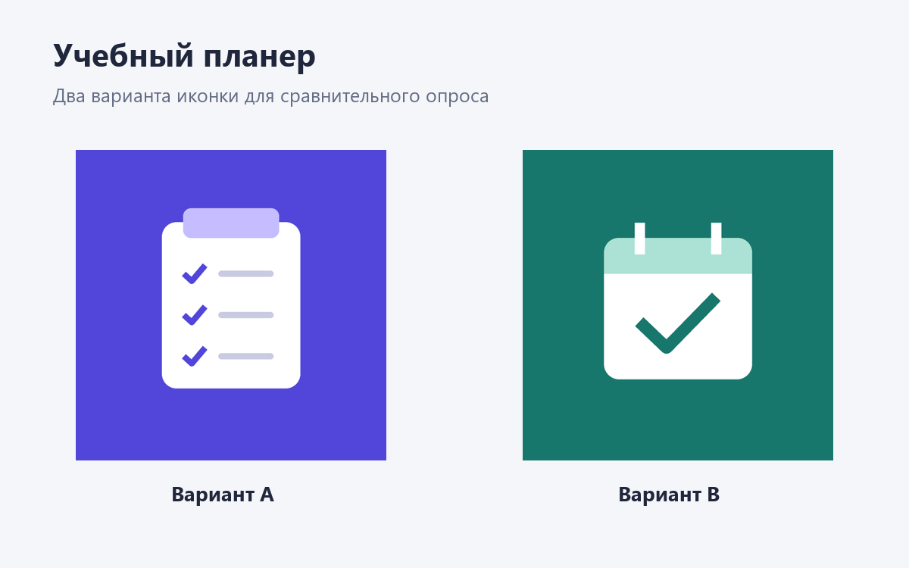

Какая иконка вам ближе
Учебный планер помогает хранить задания, следить за сроками и отмечать прогресс. Сравните два варианта иконки и ответьте на короткий опрос.

Вариант A — список заданий. Вариант B — календарь. Оцените, какая иконка лучше передаёт назначение приложения, вызывает доверие и желание установить его.
Ответить в Google Forms ↗Участие добровольное. Не указывайте ФИО, контакты и другую личную информацию. Вопросы о впечатлениях не проверяют знания.